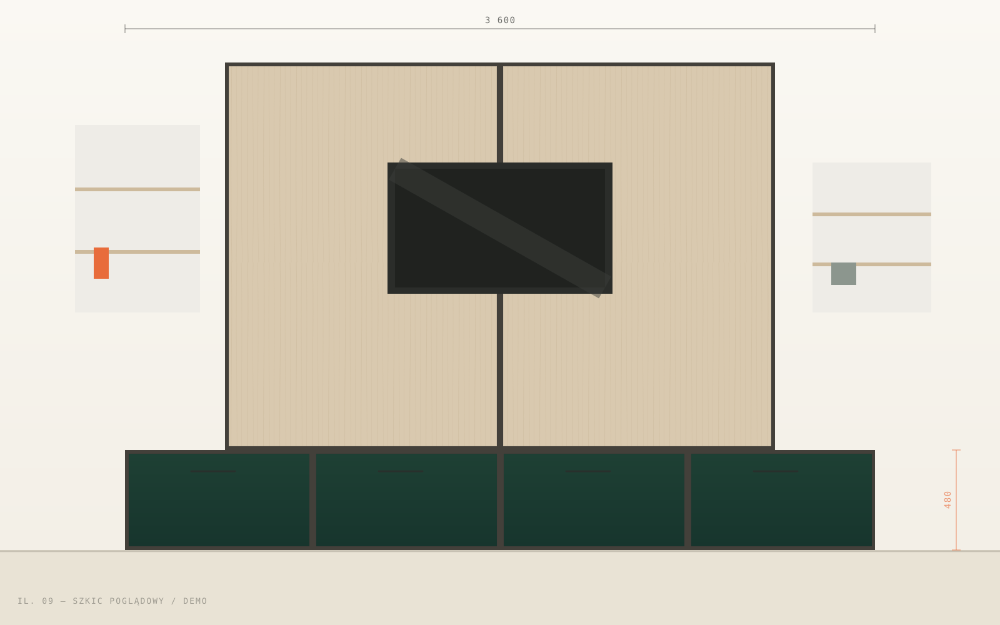
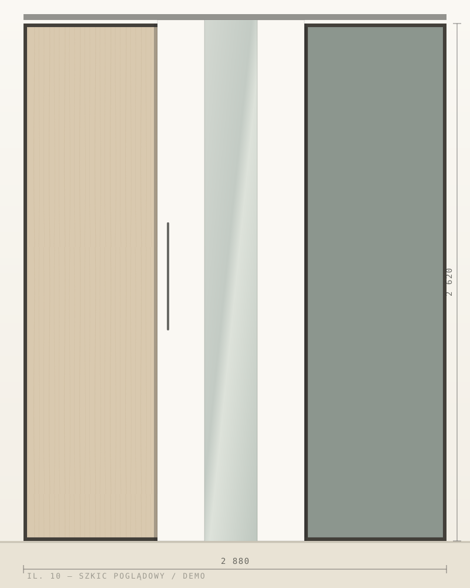
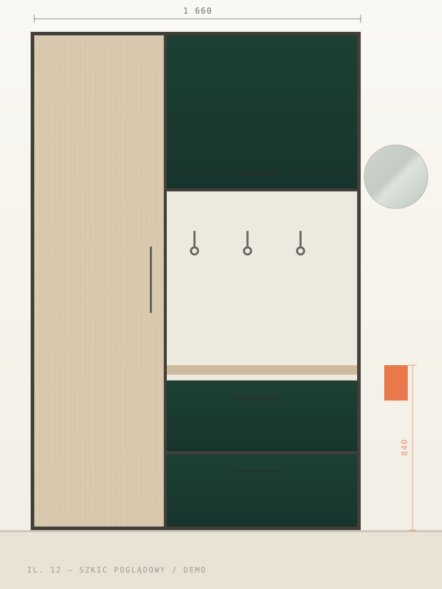
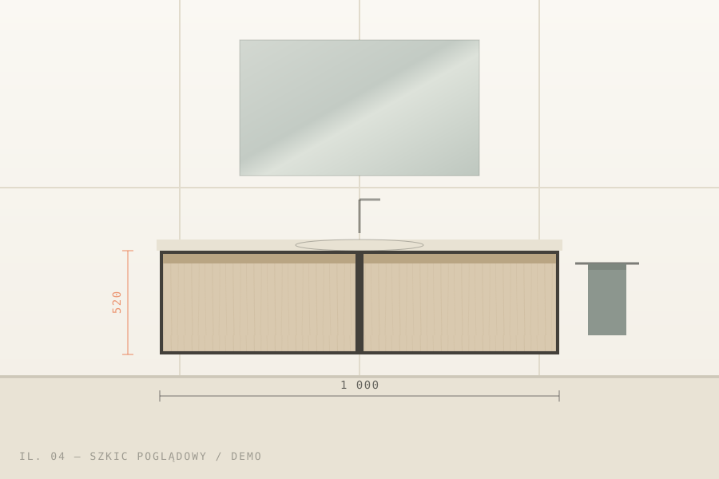

Realizacje
Każda zabudowa odpowiada na inną przestrzeń.
W wersji docelowej portfolio powinno pokazywać nie tylko gotowe meble, ale także sposób wykorzystania wnęk, narożników i nietypowych proporcji.
Prezentowane materiały są koncepcją sposobu pokazania portfolio. Przed publikacją należy zastąpić je zdjęciami zaakceptowanymi przez firmę.








Zanim powstanie mebel
Za każdą realizacją stoi pomiar i dobór materiałów.
Zapytanie
Twoja przestrzeń wygląda inaczej? Właśnie o to chodzi.
Opisz pomieszczenie, wnękę albo ścianę, którą chcesz zagospodarować.